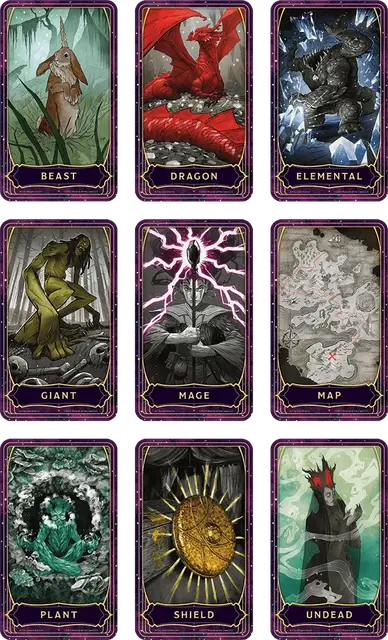

Колода ещё больших вещей
Deck of Many More Things
Чудесный предмет, легендарный

Рекомендованная стоимость от 50 001 зм
За столетия, прошедшие с тех пор, как была создана первая колода многих вещей [deck of many things], многие пытались воспроизвести её, но безуспешно. Но некоторые создали новые карты. Эти сорок четыре дополнительные карты известны под общим названием Колода ещё больших вещей.
Подобно Колоде многих вещей, Колода ещё больших вещей проявляется по-разному в разных мирах. Хотя она может включать в себя меньшее количество карт или разные варианты, она часто появляется с колодой многих вещей как часть комбинированной колоды из шестидесяти шести светящихся карт. Комбинированная колода обычно защищена коробкой или чехлом. Сорок четыре карты из колоды ещё больших вещей содержат изображения, сходные с изображениями из колоды многих вещей, и обладают мощными магическими эффектами, которые подробно описаны. Примечательно, что карты из колоды ещё больших вещей с большей вероятностью принесут пользу, хотя около трети из них по-прежнему опасны.
Перед тем, как тянуть карты, вы должны объявить, сколько собираетесь вытянуть, а затем тяните их по одной (можете использовать модифицированную колоду обычных игральных карт). Карты, взятые сверх названного числа, не будут иметь эффекта. Как только вы вытянули карту, её магия начинает действовать.
Вы должны тянуть следующую карту не позднее, чем через час после предыдущей. Если вы не вытянули названное число карт, оставшиеся сами вылетают из колоды и вступают в силу одновременно.
Если это не карта Дурак или Шут, взятая карта немедленно вступает в силу, исчезает из поля зрения и снова появляясь в колоде, что позволяет вытянуть одну и ту же карту несколько раз.
Мастер может использовать физические карты, входящие в набор карт Колода многих вещей, для создания комбинированной колоды из Колоды многих вещей и Колоды ещё больших вещей , включая любые карты, которые он пожелает. В качестве альтернативы, воспользуйтесь приведенной ниже таблицей "Колода ещё больших вещей", чтобы случайным образом определить, какие карты взяты.
Колода ещё больших вещей
| к100 | Карта |
| 1 | Аберрация |
| 2 | Равновесие* |
| 3 | Зверь |
| 4 | Книга |
| 5 | Мост |
| 6 | Костёр |
| 7 | Пещера |
| 8 | Небожитель |
| 9 | Комета* |
| 10 | Конструкт |
| 11 | Труп |
| 12 | Перекрёсток |
| 13 | Тюрьма* |
| 14 | Дверь |
| 15 | Дракон |
| 16 | Элементаль |
| 17 | Эвриала* |
| 18 | Эксперт |
| 19 | Судьба* |
| 20 | Фея |
| 21 | Исчадие |
| 22 | Огонь* |
| 23 | Дурак* |
| 24 | Драгоценность* |
| 25 | Великан |
| 26 | Гуманоид |
| 27 | Джокер* |
| 28 | Ключ* |
| 29 | Рыцарь* |
| 30 | Копьё |
| 31 | Маг |
| 32 | Карта |
| 33 | Лабиринт |
| 34 | Шахта |
| 35 | Монстр |
| 36 | Луна* |
| 37 | Слизь |
| 38 | Путь |
| 39 | Яма |
| 40 | Растение |
| 41 | Священник |
| 42 | Заключённый |
| 43 | Юродивый (Паззл)* |
| 44 | Кольцо |
| 45 | Плут* |
| 46 | Руины* |
| 47 | Визирь (Мудрец)* |
| 48 | Щит |
| 49 | Корабль |
| 50 | Череп* |
| 51 | Посох |
| 52 | Лестница |
| 53 | Звезда* |
| 54 | Статуя |
| 55 | Солнце* |
| 56 | Когти* |
| 57 | Таверна |
| 58 | Храм |
| 59 | Трон* |
| 60 | Гробница |
| 61 | Башня |
| 62 | Дерево |
| 63 | Нежить |
| 64 | Пустота* |
| 65 | Воин |
| 66 | Колодец |
| 67-100 | Брось ещё раз |
*Описаны в Колоде многих вещей [deck of many things]
Аберрация. Вы обретаете телепатию в пределах 90 футов.
Зверь. Вы немедленно превращаетесь в случайного Зверя с ПО 5 или ниже. Ваша игровая статистика — включая значение ваших характеристик, хиты и возможные действия - заменяются игровой статистикой Зверя, и любое немагическое снаряжение, которое вы носите, сливается с вашей новой формой и не может быть использовано. Все магические предметы, которые вы носите с собой, падают в незанятом пространстве в пределах 5 футов от вашей новой формы.
Вы остаетесь трансформированным таким образом в течение 2к12 дней; ничто не может изменить вашу форму, пока вы находитесь под действием этой карты, но заклинание исполнение желаний [wish] может окончить трансформацию раньше. Когда вы возвращаетесь к своей обычной форме, вы возвращаетесь в то же состояние, в котором находились в каком находились до трансформации.
Книга. Вы приобретаете способность говорить, читать и писать на 1к6 + 2 языках по вашему выбору.
Мост. Вы получаете возможность накладывать заклинание остановка времени [time stop] 1к3 раза. В качестве заклинательной характеристики вы используете Интеллект, Мудрость или Харизму (по вашему выбору).
Костёр. Вы мгновенно получаете преимущества от окончания продолжительного отдыха.
Пещера. Вы получаете скорость лазания, равную вашей скорости ходьбы. Вы также получаете возможность перемещаться вверх, вниз и вдоль вертикальных поверхностей, а также по потолкам, оставляя руки свободными.
Небожитель. У вас за спиной вырастает пара мягко светящихся крыльев с перьями, и вы получаете скорость полета в 30 футов.
Конструкт. Гомункул [homunculus] появляется в незанятом пространстве в пределах 5 футов от вас. Внешний вид гомункула определяется Мастером, и гомункул относится к вам как к своему создателю.
Труп. Ваши хиты мгновенно опускаются до 0, вы падаете без сознания и должны начать совершать спасброски от смерти. Заклинания и другие магические эффекты, восстанавливающие хиты, не действуют на вас до тех пор, пока вы не стабилизируетесь. Если вы провалите три спасброска от смерти, вы умрёте и сможете быть воскрешены только с помощью заклинания исполнение желаний [wish].
Перекрёсток. Совершите бросок к20. Если результат чётный, вы стареете на 1к10 лет. Если результат нечетный, вы становитесь моложе на 1к10 лет, минимум на 1 год. Этот эффект может быть отменен только заклинанием исполнение желаний [wish], божественным вмешательством или подобной магией.
Дверь. Вы получаете возможность накладывать заклинание врата [gate] 1к4 раза, не требуя никаких материальных компонентов. В качестве заклинательной характеристики вы используете Интеллект, Мудрость или Харизму (по вашему выбору).
Дракон. У ваших ног появляется драконье яйцо, из которого немедленно вылупляется вирмлинг. Тип дракона определяет Мастер. Вирмлинг считает вас своим родителем и непоколебимо предан вам и вашим союзникам.
Элементаль. Вы становитесь невосприимчивы к одному из следующих типов урона (выбирайте сразу после вытягивания этой карты): кислота, холод, огонь, электричество или звук.
Эксперт. Ваше значение Ловкости увеличивается на 2, с максимумом 22.
Фея. Около вас открывается проход фей, ведущий в Страну Фей, и вас немедленно затаскивает в него, после чего он исчезает во вспышке радужного света. Вы больше не берёте карт.
Проход фей появляется в виде мерцающего фрактала света над колодой и остается открытым в течение 1 минуты после того, как карта вытащена. Точное местоположение в Стране Фей, к которому ведет проход, определяется Мастером.
Исчадие. Могущественное Исчадие появляется в соседнем незанятом пространстве и предлагает вам сделку. Точный характер этой сделки зависит от Мастера, но обычно Исчадие предлагает некоторое материальное вознаграждение в обмен на то, что вы и ваши союзники выполните его задание. Исчадие безразличен к вам, и с ним можно торговаться; он выполняет свою часть любой сделки, которую заключает, хотя может исказить формулировку любого соглашения в соответствии со своими целями. Если на вас нападут или если переговоры провалятся и вы откажетесь от предложения Исчадия, он возвращается на свой родной план.
Великан. Ваш рост мгновенно увеличивается на 2к10 дюймов, а ваши максимум и текущие хиты увеличиваются на 20.
Гуманоид. Вы можете немедленно прекратить вытягивание карт из колоды, независимо от того, сколько карт вы изначально объявили.
Копьё. Значение всех ваших характеристик увеличивается на 1, с максимумом 20.
Маг. Ваше значение Интеллекта увеличивается на 2, с максимумом 22.
Карта. В любой момент в течение года, после того как вы вытянули эту карту, вы можете мысленно назвать или описать знакомый вам объект или человека. Вы сразу же узнаете его местоположение, а также расстояние между вами и ним, даже если объект или человек находится на другом плане существования. Если вы назвали имя человека, вы узнаёте, жив ли он и какие на него воздействуют состояния. Если вы назвали объект, вы узнаете, сломан он или нет. Если вы назвали магический предмет, у которого есть заряды, вы узнаете, сколько зарядов у него осталось.
Лабиринт. Вы получаете 1к3 степеней истощения.
Шахта. У ваших ног появляется груда из 2к6 драгоценных камней (каждый стоимостью 5000 зм) и 1к10 кусков драгоценной руды (каждый стоимостью 2500 зм).
Монстр. Монстр Большого размера или меньше, с ПО 10 или меньше (определяется Мастером) появляется в незанятом пространстве в пределах 15 футов от вас. Существо настроено враждебно по отношению к вам и немедленно атакует. Существо исчезает, когда его убивают или когда ваши хиты уменьшаются до 0. Если места недостаточно для появления существа Большого размера или меньше, эта карта не срабатывает.
Слизь. Студенистый куб [gelatinous cube] немедленно появляется в вашем пространстве и поглощает вас. Студенистый куб враждебен и остается таким до тех пор, пока не будет уничтожен. Если для появления Студенистого куба недостаточно места, эта карта не срабатывает.
Путь. Ваша скорость ходьбы увеличивается на 10 футов.
Яма. Под вами открывается провал. Вы падаете с высоты 3к6 × 10 футов, получая урон от падения и падая ничком.
Растение. Вы получаете возможность накладывать заклинание разговор с растениями [speak with plants] без использования ячейки заклинаний; вы должны закончить продолжительный отдых, прежде чем сможете наложить его подобным образом снова. Если у вас есть ячейка заклинаний 3-го уровня или выше, вы можете наложить это заклинание, расходуя их. В качестве заклинательной характеристики вы используете Интеллект, Мудрость или Харизму (по вашему выбору).
Священник. Ваше значение Мудрости увеличивается на 2, с максимумом 22.
Заключённый. Вас обвивают появившиеся светящиеся цепи, созданные из магической силы. Вы становитесь опутаны до тех пор, пока цепи не будут разрушены или вы не высвободитесь. Пока вы опутаны, вы не можете накладывать заклинания, а свойства любых магических предметов, которые вы носите, подавлены. Вы больше не берёте карты. Цепи невосприимчивы к урону и не могут быть рассеяны с помощью заклинания рассеивание магии [dispel magic] или подобной магии. Однако заклинание распад [disintegrate] мгновенно разрушает цепи, освобождая вас. Другое существо также может освободить вас, преуспев в проверке Ловкости Сл 30 с использованием воровских инструментов.
Кольцо. На вашем пальце появляется редкое или ещё более редкое магическое кольцо. Если у вас есть доступные настройки, вы автоматически настраиваетесь на кольцо, когда оно появляется. Мастер определяет кольцо.
Щит. В ваших руках появляется редкий или ещё более редкий комплект магических доспехов, которым вы владеете. Мастер определяет доспехи. Если вы не владеете никакими доспехами, ваш базовый КД теперь равен 12 + ваш модификатор Ловкости, пока вы не носите доспех.
Корабль. Вы получаете владение тремя навыками, определяемые Мастером.
Посох. В ваших руках появляется редкий или ещё более редкий магический жезл, посох или волшебная палочка. Мастер определяет предмет.
Лестница. Вы можете либо уменьшить количество объявленных вытягиваний на два, либо получить редкий или ещё более редкий чудесный предмет, появляющийся у вас в руках. Мастер определяет предмет.
Статуя. Вы мгновенно становитесь окаменевшим, поскольку ваше тело превращается в мрамор. Окаменение длится до тех пор, пока вы не будете освобождены с помощью заклинания высшее восстановление [greater restoration] или подобной магии.
Таверна. Ваше значение Харизмы увеличивается на 2, с максимумом 22.
Храм. Божество или сущность, обладающие подобной силой, становятся обязаны вам помочь. В любой момент времени между извлечением карты и вашей смертью вы можете использовать своё действие, чтобы призвать эту сущность к божественному вмешательству, и сущность обязана ответить. Параметры и характер этого вмешательства определяются Мастером. Если вы умираете, не воспользовавшись этим вмешательством, божество выполняет своё обязательство, накладывая на вас заклинание воскрешение [resurrection]. Как только сущность откликнулась на ваш призыв о божественном вмешательстве или воскресила вас, она больше не обязана помогать вам.
Гробница. В любое выбранное вами время в течение 1 года с момента вытягивания этой карты вы можете один раз наложить заклинание истинное воскрешение [true resurrection], не расходуя ячейку заклинаний и не требуя материальных компонентов. В качестве заклинательной характеристики вы используете Интеллект, Мудрость или Харизму (по вашему выбору).
Башня. Возьмите две дополнительные карты сверх заявленного вами количества вытягиваний. Магия этих карт вступает в силу не сразу; вместо этого выберите одну из этих двух дополнительных карт, чтобы оставить её себе, а другую верните в колоду. Магия карты, которую вы оставляете, мгновенно активируется после этого.
Дерево. Ваша кожа сразу же становится грубой, как кора дерева. Ваш базовый КД теперь равен 15 + ваш модификатор Ловкости, пока вы не носите доспех, но вы получаете уязвимость урону огнём. Это превращение может быть отменено только заклинанием исполнение желаний [wish], божественным вмешательством или подобной магией.
Нежить. Где-то на Материальном плане восстает ревенант [revenant]. Этот ревенант обвиняет вас в своём существовании и безжалостно охотится на вас, чтобы отомстить. Ревенант существует либо до тех пор, пока не пройдет 1 год, пока сам не убьет вас, либо вы не наложите заклинание исполнение желаний [wish], чтобы навсегда изгнать его в загробную жизнь.
Воин. Ваше значение Силы увеличивается на 2, с максимумом 22.
Колодец. Вы узнаёте три заговора по вашему выбору из любого списка заклинаний.